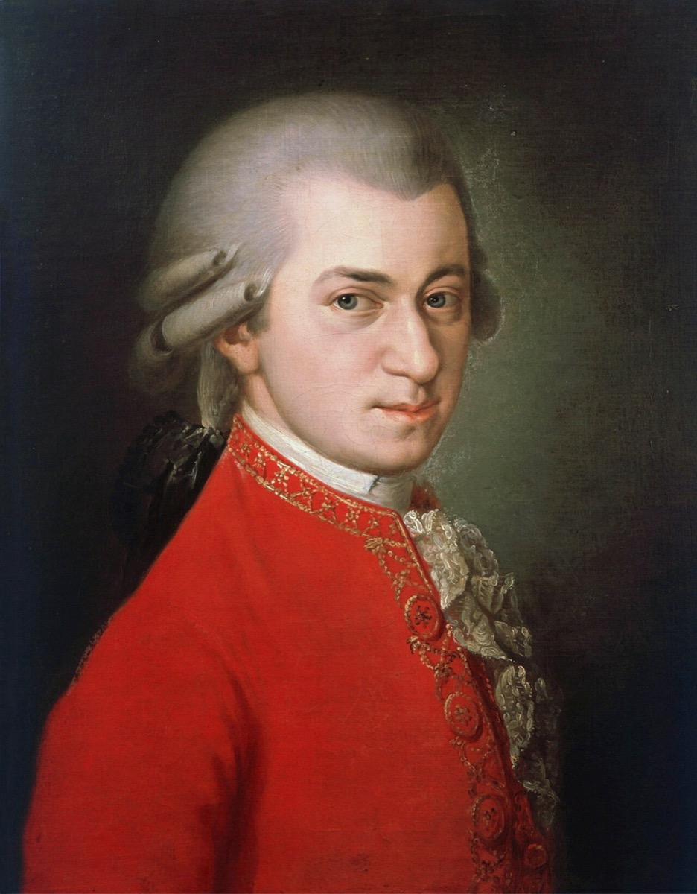

'Now, there is something one can learn from!': Mozart at the Thomaskirche

In April 1789, passing through Leipzig on a journey to Berlin, Mozart visited the Thomaskirche — Bach's church, where the cantor's successors and choir had never stopped singing the motets. The aged cantor Doles, a Bach pupil himself, had the Thomanerchor perform Singet dem Herrn ein neues Lied for the guest.
The account we have (published nine years later by Rochlitz, who knew the witnesses — the scene's core is accepted, its dialogue polished; tradition flag on the exact words): Mozart, a few bars in, sat up startled; a few more, and he cried out — "Was ist das?" — and then: "Now, there is something one can learn from!" Told there were more Bach motets in the school's possession, he had the parts brought — there were no scores — and spread them around him, on his knees, on chairs, holding pages in both hands, and did not rise until he had read through everything there. He asked for, and received, a copy.
Every layer of this scene is the whole Arc II story compressed. The music survived because one institution kept singing it while the world forgot. The visitor was prepared — van Swieten's Sundays had trained him — yet still ambushed: reading fugues in a library is one thing; eight-part counterpoint alive in a stone room is another. And the reaction is a craftsman's, not an antiquarian's: something to learn from — the dead cantor readmitted to music history not by sentiment but by professional judgment of the highest court then sitting.
Why it matters. The timeline's single most vivid proof that the eclipse was custodial, not qualitative — and the emotional hinge of the whole reception arc: 1750's forgotten servant becoming, in one documented gasp, the teacher of the age's genius. Forty years later, in Berlin, the public caught up.
Rochlitz's account (Allgemeine musikalische Zeitung, 1798) — details polished; core corroborated
Wolff, The Learned Musician, epilogue
→ full bibliography & links